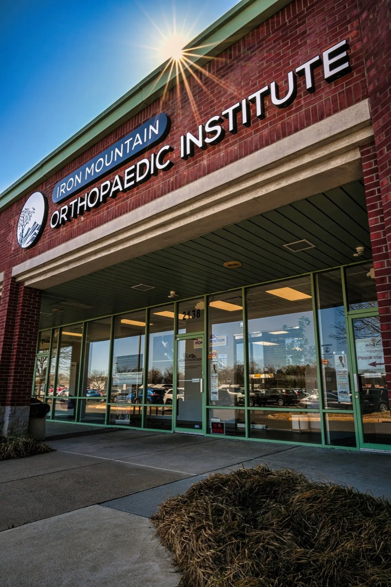

Shoulder, knee and hip surgery in Huntingdon Valley, PA
The orthopedic surgeon who goes over your MRI with you,then plans your surgery and recovery around your life
Dr. Mark Ayzenberg does the repair himself and sees you at every follow-up until you’re back to work and sport. Most procedures are minimally invasive and outpatient.
Calls answered weekdays, 8 to 4. Request a visit any time.
- 5.0400+ Google reviews
- Double board-certifiedMD, FAAOS
- Fellowship-trainedSports medicine
- Former team physicianPhiladelphia Wings
When it’s time to get it fixed
You’ve done the physical therapy. The cortisone shot wore off. Now the MRI says tear, or a doctor has already said surgery.
You’re probably past the point of waiting it out if:
- Your MRI shows a tear
- Shoulder pain wakes you up at night
- Your shoulder has popped out more than once
- Your knee gives way, or you’ve torn your ACL
- An earlier repair didn’t hold
Not sure yet whether you need surgery? That’s what your first visit answers.
Patient video: flew 6,000 miles for a rare latissimus tendon repairPlays on the live page
Meet Dr. Ayzenberg, founder of Iron Mountain Orthopaedic Institute
Dr. Ayzenberg started Iron Mountain Orthopaedic Institute so patients get longer visits and real time with their surgeon.
He did his residency at Einstein in Philadelphia. His fellowship at the Southern California Orthopedic Institute trained him in the repairs he does today: sports medicine, arthroscopy and reconstruction. He’s board-certified in both orthopedic surgery and sports medicine.
Patients bring him the cases that need the most experience. One flew 6,000 miles for a rare latissimus tendon repair.
Google, Healthgrades and Vitals reviews
What patients and a physical therapist say
“I have seen many orthopedic doctors over the last few years, but none even come close to providing the same level of attention and care. He carefully studies the imaging…”
Peter T. · Google review
Dr. Ayzenberg’s Google profile: 5.0 from 440 reviews
“From the office staff to the doctor himself, this practice was an absolute joy to deal with. After surgery I am pain free and walking as well as I did before my injury.”
“Dr. Ayzenberg is by far the best and the most trustworthy Orthopedic doctor and surgeon that I know. As a Physical Therapist, he is always my first recommendation for all my friends and family…”
“This is my 2nd major surgery he’s done on me and I wouldn’t go to anyone else. Complete trust.”
Hear it from patients
Bob, 6 days after arthroscopic rotator cuff repairPlays on the live page
Sharon, 1 month after repair of a massive rotator cuff tearPlays on the live page
John, back to being an athlete after knee surgeryPlays on the live page
Individual results vary.
What he repairs
Shoulder
- Rotator cuff repair, from small tears to massive ones
- Labral repair and stabilization
- Shoulder replacement
- Revision rotator cuff repair, when an earlier one didn’t hold
Knee
- ACL reconstruction, including revision ACL
- Meniscus repair
- Cartilage and ligament repair
- Kneecap stabilization
Hip
- Hip arthroscopy for labral tears and impingement
- Hamstring and gluteal tendon repair
He doesn’t do knee or hip replacements.
How Dr. Ayzenberg gets you back
- 01
Your scan, explained.
He shows you what’s torn on your own images, in plain words.
- 02
Small incisions.
Most of his repairs are arthroscopic, done through incisions under a centimeter long. Less cutting usually means less pain and a quicker start on rehab.
- 03
Rehab that fits your life.
Tell him what you need to get back to, like a full workday or your Saturday game. Your rehab is built around it, with checkpoints along the way.
- 04
The same surgeon, start to finish.
The surgeon who operated is the one checking your progress, so the person adjusting your rehab knows exactly what was repaired.
Typical recovery ranges
How long until you’re back
You sleep in your own bed that night.
Back to daily tasks for most shoulder surgery patients. Sport and heavy work come back over the following months.
Back to sport after ACL reconstruction, with strength testing before you’re cleared.
Typical ranges. Individual results vary.
Your first visit
In one visit, you’ll know what’s wrong and how it can be repaired. You’ll leave with:
- An exam with Dr. Ayzenberg
- A straight answer on what’s torn, and how badly
- Your surgical plan: which repair, and why that one
- Your recovery timeline, including time off work
- Time for your questions, and for whoever comes with you
Getting there takes three steps
- 01Answer a few questions
about your joint, your coverage and how far you are from Huntingdon Valley.
- 02Pick a time for a short call.
If your coverage and distance work, you choose a time on the calendar. Our team books your visit on that call.
- 03Come in with your scans
and any reports you have.
Your benefits, checked first: Iron Mountain works with most PPO plans, and you’re welcome to pay on your own. Our team confirms your coverage on your call, before your visit is booked.
Questions before you book
Will Dr. Ayzenberg do my surgery himself?
Yes. If you go ahead with surgery, he performs it.
How soon can I be seen?
Usually within a couple of weeks, and faster for urgent problems. Our team gives you the date on your call. If you’d like an earlier visit, his physician assistant, Jamie Hermance, can often see you first, and Dr. Ayzenberg reviews your plan either way.
A doctor already told me I need surgery. Can I still come in?
Yes. Bring your scans and reports. He’ll give you his own opinion and his own plan for the repair.
I had surgery before and it didn’t work. Will he look at it?
Yes. He does revision surgery, which means redoing a repair that didn’t hold. Bring your operative report and imaging, and he’ll tell you what he sees and what can be done.
Am I too old, or too young, for surgery?
Age alone doesn’t decide it. He looks at the tear, your health and what you want to get back to, then tells you whether surgery makes sense for you.
How much pain should I expect after surgery?
Usually less than people expect. With arthroscopic repairs, the worst of it typically passes within days. Recovery varies by repair, and he walks you through yours at the visit.

See the surgeon who’ll do your surgery
Patients rate him 5.0 across 400+ Google reviews, and you see the same surgeon from your first visit until you’re back to what you do.
Huntingdon Valley, PA 19006
Just outside Philadelphia